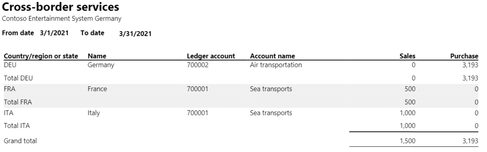
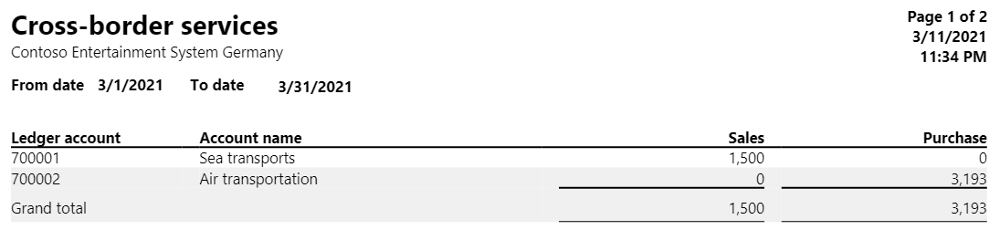

Cross-border services report
Austrian companies must periodically report services that are purchased and sold across borders, if those services meet specific thresholds for specific service types in the other countries or regions that are involved.
The Cross-border services report shows a summary of incoming and outgoing cross-border services, the countries or regions that are the providers or recipients of the cross-border services, and the net amounts that were paid for the services. This report is typically used by accounting managers, accountants, and sales managers to inquire into the status of sales transactions.
Setup
Go to General ledger > Ledger setup > General ledger parameters, and then, on the Sales tax tab, set the Tax direction requirement option to Yes.
Go to General ledger > Chart of accounts > Accounts > Main accounts, and create an account for each cross-border service. As part of the setup for each account that you create, follow these steps:
- On the Legal entity overrides FastTab, select Add, and select the legal entity.
- On the Legal entity overrides FastTab select Sales tax, and then, in the Sales tax direction field, select either Purchase or Sales, depending on sales tax direction. For more information about how to create main accounts, see Create a main account.
Go to Tax > Indirect taxes > Sales tax > Sales tax groups, and create a sales tax group for each country or region that a service is delivered to. As part of the setup for each group that you create, on the General FastTab, in the Sales tax description section, in the Country/region or state field, enter the country/region code. For more information about how to create sales tax groups, see Set up sales tax groups and item sales tax groups.
Work with the Cross-border services report
When you settle an invoice that has cross-border services, you must select the sales tax group for the country or region in the Sales tax group field and the type of cross-border service in the Main account field.
To generate the report, go to Tax > Inquiries and reports > Sales tax reports > Cross-border services. You can set the following parameters.
Field Description From date Select or enter the start date of the reporting period. To date Select or enter the end date of the reporting period. Group by Select whether the report should be printed by the type of service or by country or region.
Example
The following example shows how you can set up and generate the Cross-border services report. This example uses the DEMF legal entity.
Go to Organization administration > Organization > Legal entities, and select DEMF.
On the Address FastTab, select Edit.
In the Country/region field, select AUT (Austria).
Close the page.
Go to General ledger >Ledger setup > General ledger parameters, and then, on the Sales tax tab, set the Tax direction requirement option to Yes.
Go to General ledger > Chart of accounts > Accounts > Main accounts, and create an account. As part of the setup, follow these steps:
- On the General FastTab, in the Identification section, in the Main account field, enter 700001. In the Name field, enter Sea transports.
- On the Legal entity overrides FastTab, select Add, and select the DEMF legal entity.
- On the Legal entity overrides FastTab, select Sales tax, and then, in the Sales tax direction field, select Sales.
Create another account. As part of the setup, follow these steps:
- On the General FastTab, in the Identification section, in the Main account field, enter 700002. In the Name field, enter Air transportation.
- On the Legal entity overrides FastTab, select Add, and select the DEMF legal entity.
- On the Legal entity overrides FastTab, select Sales tax, and then, in the Sales tax direction field, select Purchase.
Go to Tax > Indirect taxes > Sales tax > Sales tax groups and create sales tax groups that have the following settings.
Sales tax group Country/region or state (in the Sales tax group description section on the General FastTab) Sales tax code (on the Setup FastTab) France FRA EU0, EU19, EU7 Italy ITA EU0, EU19, EU7 Germany DEU EU0, EU19, EU7 Go to Accounts receivable > Invoices > All free text invoices, and create and post free text invoices that have the following settings.
Customer account (on the Free text invoice header FastTab, in the Customer section) Date (on the Free text invoice FastTab, in the Invoice section) Main account (on the Invoice lines FastTab) Sales tax group (on the Invoice lines FastTab) Item sales tax group (on the Invoice lines FastTab) Quantity (on the Invoice lines FastTab) Unit price (on the Invoice lines FastTab) DE-15 3/8/2021 700001 Italy FULL 1 1,000 DE-12 3/17/2021 700001 France FULL 1 500 Go to Accounts payable > Invoices > Invoice journal, and create a journal.
On the Action Pane, select Lines, and then create a record that has the following settings.
Date Account Invoice date Invoice Credit Offset account type Offset account Sales tax group Item sales tax group 3/22/2021 DE_TX_001 3/22/2021 AU_0006 3800 Ledger 700002 Germany FULL Go to Tax > Inquiries and reports > Sales tax reports > Cross-border services, and follow these steps:
- In the From date field, select 3/1/2021. In the To date field, select 3/31/2021.
- In the Group by field, select Country/region.
- On the Records to include FastTab, select Filter.
- In the Table, Derived table, and Field fields, select Main account.
- In the Criteria field enter 700001, 700002. For more information, see Advanced filtering and query syntax.

Go to Tax > Inquiries and reports > Sales tax reports > Cross-border services, and follow these steps:
- In the From date field, select 3/1/2021. In the To date field, select 3/31/2021.
- In the Group by field, select Service.
- On the Records to include FastTab, select Filter.
- In the Table, Derived table, and Field fields, select Main account.
- In the Criteria field, enter 700001, 700002. For more information, see Advanced filtering and query syntax.
Select OK, and review the report results.
